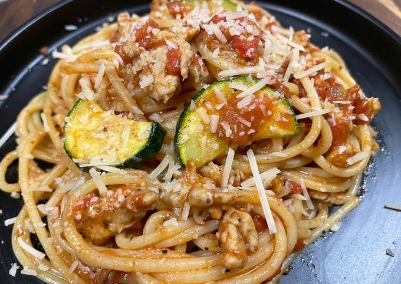

Home
Chicken Sausage Spaghetti Bolognese

Description
A big bowl of pasta never fails to satisfy--it's quick, carby, comforting,
and my go-to no matter the weather.
Ingredients
- 1 Zucchini
- 9 oz Italian Chicken Sausage Mix
- 14 oz Crushed Tomatoes
- 2 tbsp Sour Cream
- 1 tbsp Italian Seasoning
- 6 oz Spaghetti
- 1 tbsp Chicken Stock Concentrate
- 1/4 cup Parmesan Cheese
- 1 tbsp Olive Oil
- 1 tsp Sugar
- 1 tbsp Butter
Steps
-
-
Heat broiler to high. Bring a large pot of salted water to a boil.
Wash and dry produce
-
Trim and halve zucchini lengthwise; thinly slice crosswise into
half-moons.
-
-
Toss zucchini on a baking sheet with a large drizzle of olive oil
and season with half the Italian Seasoning (you'll use the rest in
the next step), salt, and pepper.
-
Broil until browned and softened, 5-7 minutes. TIP:Watch carefully
to avoid burning.
-
-
Meanwhile, heat a drizzle of olive oil in a large pan over
medium-high heat. Add sausage and remaining Italian Seasoning. Cook,
breaking up meat into pieces, until browned and cooked through, 4-6
minutes.
-
-
Once water is boiling, add spaghetti to pot. Cook, stirring
occasionally, until al dente, 9-11 minutes.
-
Reserve 1/2 cup pasta cooking water, then drain and set aside.
-
-
While pasta cooks, stir crushed tomatoes, stock concentrate, and 1
tsp sugar into pan with sausage. Season generously with salt and
pepper. Bring to a simmer and cook until reduced, 5-7 minutes.
-
-
Stir sour cream and 1 tbsp butter into pan with sauce until melted
and combined. Add drained spaghetti and zucchini; toss to coat. If
needed, stir in reserved pasta cooking water 1 tbsp at a tie until
pasta is thoroughly coated in sauce. Taste and season with salt and
pepper.
- Divide pasta between bowls. Sprinkle with Parmesan and serve.